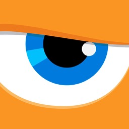

A pocket path tracer, designed for iPhone Duo.
Sketchbots, rendered in RAYS
Real path-traced light, the kind film and product-visualization renderers use, running on your iPhone's hardware ray tracing. Hit Render, and watch a photoreal image come together in seconds.

As a computer graphics artist for more than 30 years, I've always loved the idea of creating on the go: real images, made wherever I happen to be. RAYS is the first app in a creative suite built on that philosophy.
Steve Talkowski, Sketchbot Studios

RAYS is a progressive path tracer. Each sample follows light as it bounces through the scene, so soft shadows, reflections, glass and the color bleeding off every wall all simply happen, and the image cleans up the longer it runs.
The Cornell box is computer graphics' most famous test scene, built here from Cornell's published measurements.
Open it for a wide canvas with the panels beside your render; fold it closed and the whole studio is still in one hand. RAYS is at home on every iPhone with hardware ray tracing, too.


Apple's own iPhone Duo USDZ model, opened in RAYS on an iPhone Duo. Switch its Color and Pose variants, light it with an HDRI and a shadow catcher, and render it, all in your hand.


Import a model, light it, render it, save it, all on the phone in your hand.

Progressive path tracing on physically based materials: metal, gloss, clear coat, clear and frosted glass. A denoiser for clean images sooner, real depth of field with Tap to Focus, and saves to Photos as PNG or HDR, plus EXR for compositing.

Three studio HDRIs, plus sun, bulb, spot and area lights placed right in the view. A shadow catcher and ground projection sit your model on the HDRI's own floor, and backdrop colors bounce light back like a studio cyc.

USDZ, USD, glTF, GLB and OBJ, from Files, Mail, Messages or AirDrop. Materials, textures, variants and lights come in with the model, your original file is never changed, and several models can share one scene.

A fast real-time view for framing and arranging, with Preview Effects: ambient occlusion, curvature, depth of field, bloom, tone mapping, color balance and grain. Saved cameras use real focal lengths.

Every move, light, camera and material edit saves as one USD file that opens in Quick Look, Blender and other USD apps. Or start from the samples: Sketchbot, Material Spheres and two classic Cornell boxes.

Rendering needs an iPhone with hardware ray tracing: iPhone 15 Pro, iPhone 16 or later. On other iPhones RAYS works in Preview only.